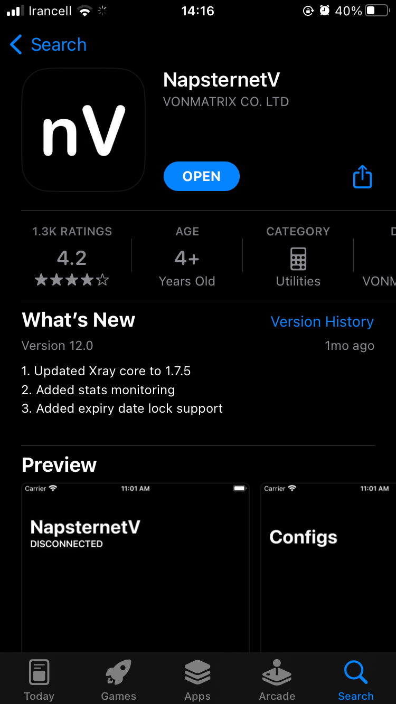

- 1. برنامه NapsternetV را دانلود کنید.
-
2. لینک دانلود
NapsternetV

-
3. اکنون لینک vpn ارسال شده توسط پشتیبانی برای خودتان رو کپی کنید.
-
4. برنامه را باز کنید و از منو پایین صفحه دکمه
configs
را فشار دهید و سپس علامت
+
در ناحیه سمت راست بالا صفحه را لمس کنید.
-
5. از منو باز شده گزینه Import v2ray uri from clipboard را انتخاب کنید

-
6. پس مشاهده پیام
"NapsternetV" woud like to paste from "***"
Do you want to alloe this?
گزینه Allow Paste را انتخاب کنید
-
7. در صورت موفقیت آمیز بودن فرآیند پیام زیر را مشاهده خواهید کرد.

-
8. حال در لیست روی ایتم وارد شدن کلیک کنید تا نوار سمت چپ آن آبی شود

-
9. حال از منو پایین صفحه گزینه
Home
را انتخاب کنید و پس از گزینه آبی پایین سمت راست صفحه را فشار کنید.

-
10. خیلی خب، به فضل الهی به اینترنت وصل شدید.